Mental health detection in social media text has emerged as one of the most active applications of natural language processing, with the potential to assist clinical screening at population scale. However, the vast majority of existing work focuses on English-language data, leaving speakers of languages like Arabic (over 420 million speakers), Urdu (over 230 million), and Chinese (over 1.3 billion) severely underserved by current AI tools.
These languages present distinct and compounding challenges for LLMs. Arabic involves dialectal variation, rich morphology, and cultural norms around emotional expression tied to religious idiom and collectivist social values. Romanized Urdu involves code-switching between Roman script, native Urdu vocabulary, and English, encoded through poetic metaphors and culturally specific distress expressions. Chinese social media involves tonal ambiguity, regional variation, and culturally embedded expressions of distress that differ substantially from Western clinical vocabulary.
This report presents the final experimental results of our project, which systematically evaluates six LLMs — GPT-4o-mini, Gemini 2.0 Flash, Claude Haiku 4.5, meta-llama-3.1-8b-instruct, Gemma 8B, and deepseek-r1-0528-qwen3-8b — across three experiments spanning 90,000 individual classifications. Our primary contributions are:
Earlier milestones in this project (Milestones 2 and 3) established the baseline methodology. Milestone 2 evaluated Gemini 2.0 Flash on Arabic using a 50-sample pilot, achieving 90.0% accuracy. Milestone 3 expanded to a 500-sample Urdu evaluation across four models and four prompting strategies, finding that: (a) V3 few-shot culturally grounded prompting outperformed zero-shot by 2.8–8.3%, (b) a translate-then-classify pipeline caused 8–14% accuracy drops relative to native-language processing, and (c) models exhibited distinct behavioral profiles — Gemini as a high-recall screener, GPT-4o-mini and DeepSeek 8B as balanced classifiers, and Claude Haiku 4.5 as an ultra-high-precision model that misses the majority of depressed posts.
The present report scales these findings to 5,000 samples per language and introduces Experiment 2 (keyword reasoning transparency) and Experiment 3 (cross-lingual consistency), enabling a much richer analysis of where and how model failures occur at the lexical and semantic level. Together, the three experiments provide classification accuracy, lexical attribution, and reasoning stability — three orthogonal dimensions of model quality that no prior multilingual mental health NLP evaluation has combined.
Three datasets were sourced, one per target language:
For each language, 6,000 samples were translated to English using Cohere's Command R model (command-r-08-2024), selected for its strong multilingual performance and competitive API costs. Translation served dual purposes: (1) as a data cleaning pass — posts that were ambiguous, corrupted, or off-topic were flagged and removed; and (2) producing the English translations used directly as input for Experiment 3. After cleaning, 5,000 samples were selected per language with a strict 50/50 depressed / not depressed stratified split.
| Language | Total Translated | Final Sample | Depressed | Not Depressed |
|---|---|---|---|---|
| Arabic | 6,000 | 5,000 | 2,500 | 2,500 |
| Romanized Urdu | 6,000 | 5,000 | 2,500 | 2,500 |
| Chinese | 6,000 | 5,000 | 2,500 | 2,500 |
| Total | 18,000 | 15,000 | 7,500 | 7,500 |
Table 1: Dataset composition after translation and filtering. All final datasets are perfectly balanced (50/50 split).
Six models were evaluated, split equally between commercial API-based and local open-weight models. This split directly addresses our central research question: whether open-weight models can serve as viable, privacy-preserving alternatives to commercial APIs for multilingual mental health NLP.
| Model | Type | Provider / Backend | Parameters | Role in Project |
|---|---|---|---|---|
| GPT-4o-mini | Commercial API | OpenAI | ~8B (est.) | Strong multilingual baseline; conservative classifier |
| Gemini 2.0 Flash | Commercial API | Google DeepMind | Unknown | High-recall reference model; top performer |
| Claude Haiku 4.5 | Commercial API | Anthropic | Unknown | Ultra-high precision, very low recall; safety-aligned |
| LLaMA 3 8B | Local / Open-weight | Meta AI via LM Studio | 8B | Primary open-weight candidate |
| Gemma 8B | Local / Open-weight | Google via LM Studio | 8B | Lightweight open-weight candidate |
| DeepSeek 8B | Local / Open-weight | DeepSeek AI via LM Studio | 8B | Multilingual-tuned open-weight candidate |
Table 2: Models evaluated in this project. Local model inference handled via LM Studio for a consistent API interface.
Local model inference was handled via LM Studio, allowing reuse of the same model provider abstraction built in earlier milestones. Daniyal Lilani led the commercial API experiments; Harsh Patel led the local model pipeline; Taha Rana and Abdul Muqit Afzal led data cleaning, translation, and scripting across all three experiments. Every member of the team contributed equally to planning the experiments and their execution flows.
All six models classified all 5,000 samples per language (15,000 per model, 90,000 total) using our V3 few-shot prompt strategy. V3 prompts include: multi-shot culturally grounded examples in the target language, exclusion rules for language-specific false positive patterns (poetry, religious expression, political commentary, casual usage), and a binary output constraint (Depressed / Not Depressed). Distinct V3 prompts were written for each language. This experiment produces standard classification metrics (accuracy, precision, recall, F1) for every model–language combination and serves as the primary quantitative result of the project.
Each model received the same post it classified in Experiment 1 along with its own assigned label, and was asked to identify 1–2 keywords most influential in its decision, plus their English translations. This experiment probes reasoning at the lexical level — surfacing which words drove each classification and whether those words reflect genuine clinical signals or systematic biases. Experiment 2 uses the same labels as Experiment 1 (it does not re-classify), so its metrics are identical to Experiment 1 by design; the analytical value lies in the keyword output, not the classification outcome.
Each model received the Cohere-translated English version of the post it classified in Experiment 1, along with its original label. It was asked: does it still agree with this classification? It also identified 1–2 English keywords central to this re-evaluation. This tests whether model decisions are driven by post content (language-invariant) or surface-level language cues. A model that changes its decision when shown the translated version is exhibiting cross-lingual inconsistency, raising questions about the robustness of its reasoning. Experiment 3 was run for all models except Claude (5 of 6), across all three languages.
| Experiment | Input | Task | Models | Output |
|---|---|---|---|---|
| Exp 1 | Original-language post | Binary classify (Depressed / Not Depressed) | All 6 | Label + metrics |
| Exp 2 | Original-language post + Exp1 label | Identify 1–2 driving keywords + translation | All 6 | Keywords (same label as Exp1) |
| Exp 3 | English-translated post + Exp1 label | Confirm or reject original label + keywords | All 6 except Claude | Agreement + new keywords |
Table 3: Summary of the three experimental paradigms.
| Model | Type | Language | Accuracy | Precision | Recall | F1 | TP | FP | TN | FN |
|---|---|---|---|---|---|---|---|---|---|---|
| Gemini 2.0 Flash | Online | Arabic | 0.8665 | 0.9046 | 0.8196 | 0.8600 | 2049 | 216 | 2282 | 451 |
| Gemini 2.0 Flash | Online | Urdu | 0.8984 | 0.8744 | 0.9304 | 0.9016 | 2326 | 334 | 2166 | 174 |
| Gemini 2.0 Flash | Online | Chinese | 0.7112 | 0.8010 | 0.5620 | 0.6606 | 1405 | 349 | 2151 | 1095 |
| GPT-4o-mini | Online | Arabic | 0.8018 | 0.9660 | 0.6256 | 0.7594 | 1564 | 55 | 2445 | 936 |
| GPT-4o-mini | Online | Urdu | 0.8944 | 0.9595 | 0.8236 | 0.8864 | 2059 | 87 | 2413 | 441 |
| GPT-4o-mini | Online | Chinese | 0.6398 | 0.8787 | 0.3244 | 0.4739 | 811 | 112 | 2388 | 1689 |
| Claude Haiku 4.5 | Online | Arabic | 0.7992 | 0.9431 | 0.6368 | 0.7603 | 1592 | 96 | 2404 | 908 |
| Claude Haiku 4.5 | Online | Urdu | 0.7056 | 0.9795 | 0.4200 | 0.5879 | 1050 | 22 | 2478 | 1450 |
| Claude Haiku 4.5 | Online | Chinese | 0.6096 | 0.9322 | 0.2364 | 0.3772 | 591 | 43 | 2457 | 1909 |
| LLaMA 3 8B | Local | Arabic | 0.8234 | 0.8159 | 0.8352 | 0.8255 | 2088 | 471 | 2029 | 412 |
| LLaMA 3 8B | Local | Urdu | 0.8536 | 0.8110 | 0.9220 | 0.8630 | 2305 | 537 | 1963 | 195 |
| LLaMA 3 8B | Local | Chinese | 0.6826 | 0.8029 | 0.4840 | 0.6039 | 1210 | 297 | 2203 | 1290 |
| Gemma 8B | Local | Arabic | 0.8344 | 0.8519 | 0.8095 | 0.8302 | 2019 | 351 | 2143 | 475 |
| Gemma 8B | Local | Urdu | 0.8726 | 0.8752 | 0.8692 | 0.8722 | 2173 | 310 | 2190 | 327 |
| Gemma 8B | Local | Chinese | 0.6308 | 0.8998 | 0.2944 | 0.4436 | 736 | 82 | 2418 | 1764 |
| DeepSeek 8B | Local | Arabic | 0.7907 | 0.8428 | 0.7149 | 0.7736 | 1785 | 333 | 2164 | 712 |
| DeepSeek 8B | Local | Urdu | 0.7188 | 0.7966 | 0.5885 | 0.6770 | 1469 | 375 | 2114 | 1027 |
| DeepSeek 8B | Local | Chinese | 0.6476 | 0.8261 | 0.3750 | 0.5158 | 936 | 197 | 2293 | 1560 |
Table 4: Complete Experiment 1 results — all 6 models × 3 languages (n=5,000 per cell). Best F1 per language shown in bold in the text.
The heatmaps below provide a visual overview of the performance landscape. The F1 and accuracy heatmaps confirm Gemini 2.0 Flash as the top-performing model across all three languages, and reveal the dramatic performance gap on Chinese relative to Arabic and Urdu.
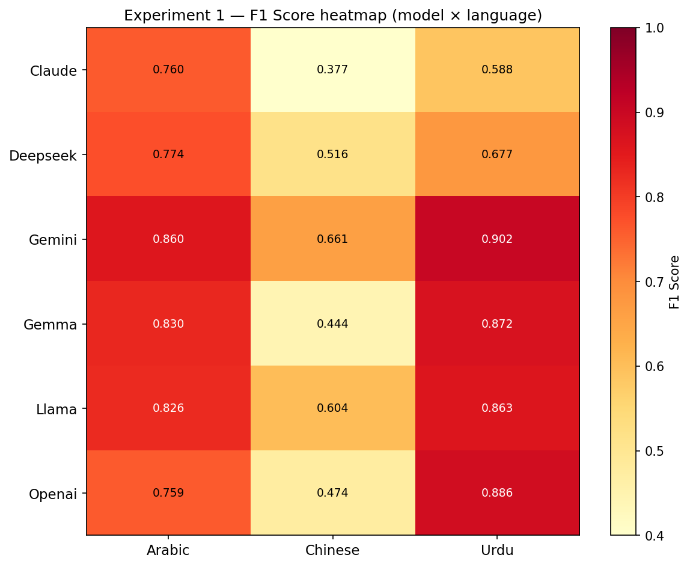
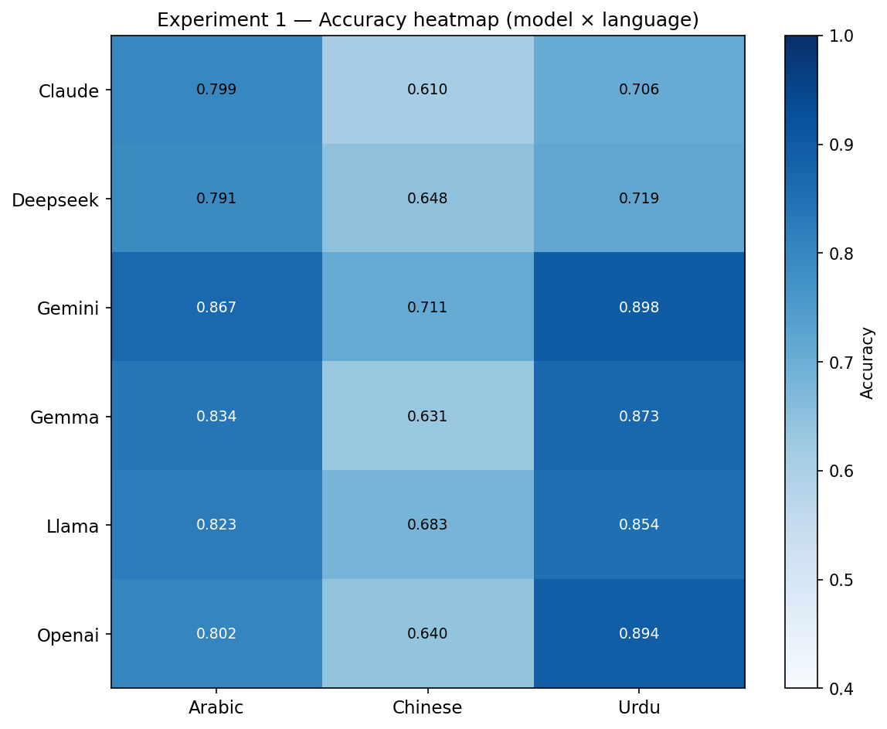
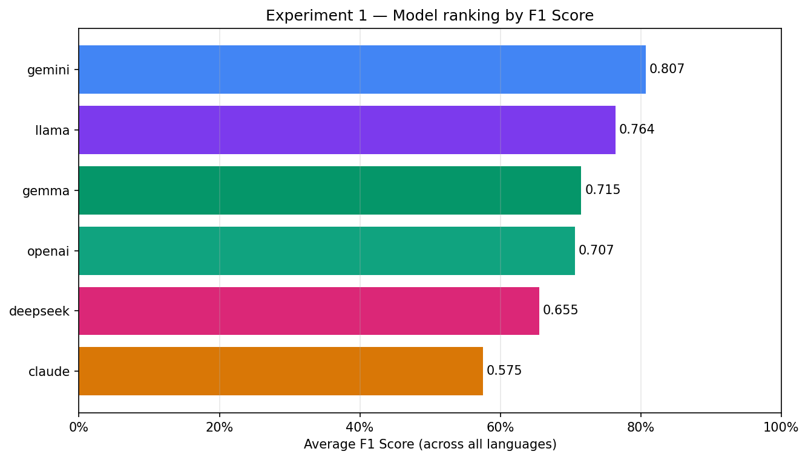
Figure 3: Models ranked by average F1 score across all three languages. Gemini leads, followed by LLaMA and Gemma (local), then GPT-4o-mini, DeepSeek, and Claude.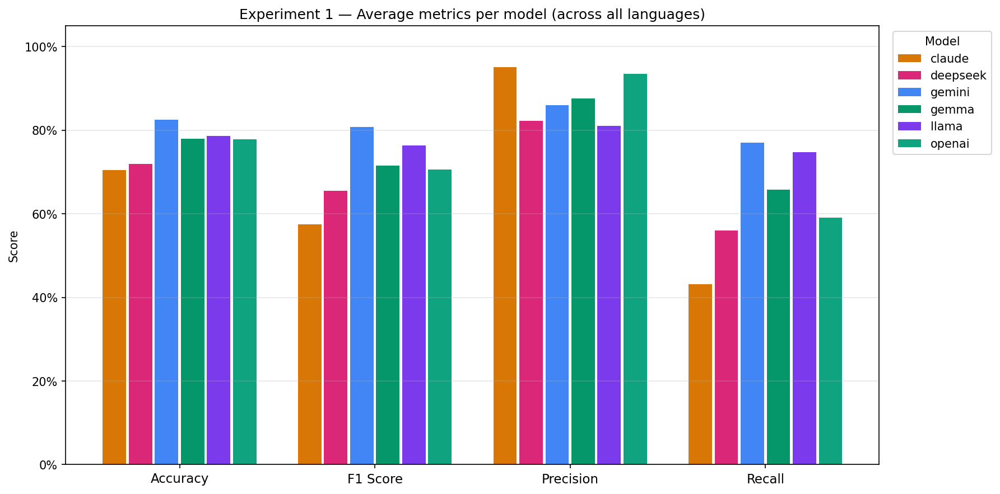
Figure 4: All four metrics (accuracy, precision, recall, F1) broken down per model, averaged across languages. Claude's precision spike and recall trough are clearly visible. Gemini achieves the most balanced high performance.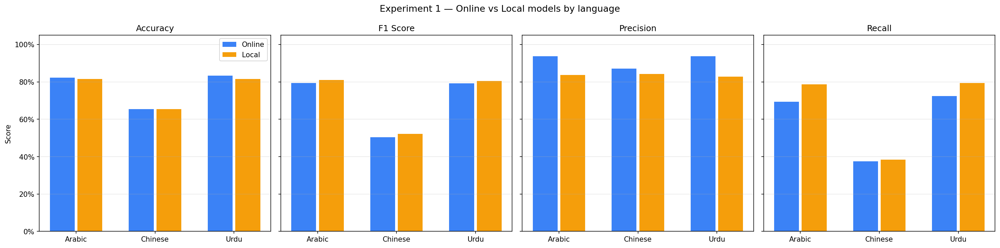
Figure 5: Online (commercial API) vs. local (open-weight) model performance comparison. The gap between tiers is modest on Arabic and Urdu, but widens on Chinese.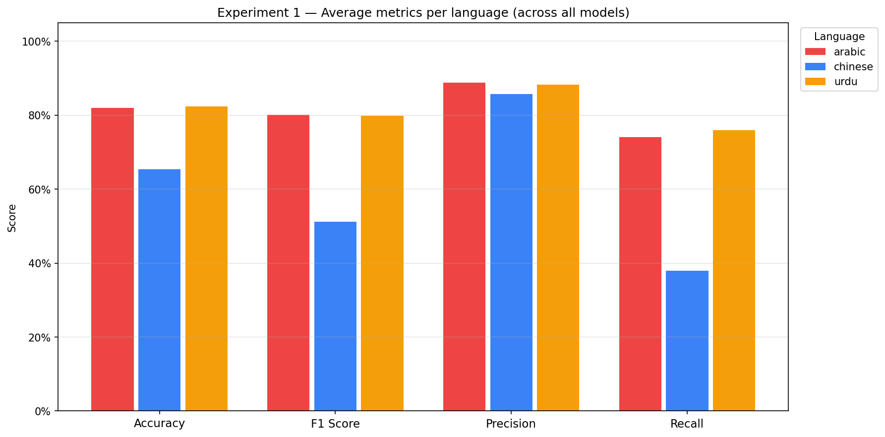
Figure 6: Average metrics grouped by language across all models. Chinese consistently lags on recall and F1 while all models show artificially high precision there — reflecting a systematic bias against classifying Chinese posts as depressed.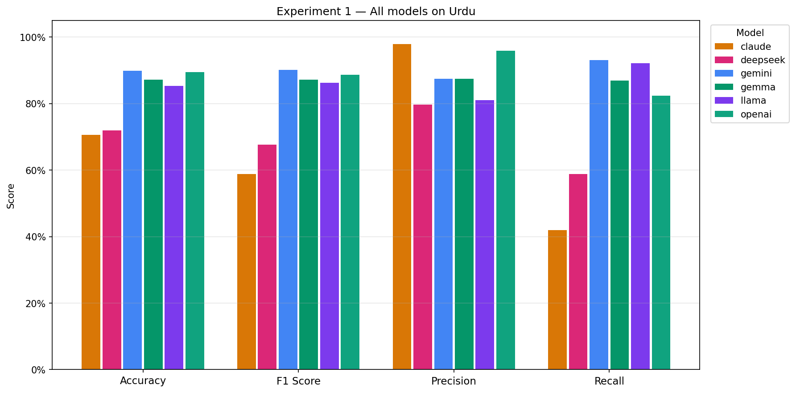
Figure 7: All models on Romanized Urdu. Local models match commercial APIs closely — LLaMA and Gemma within 3–4 F1 points of Gemini.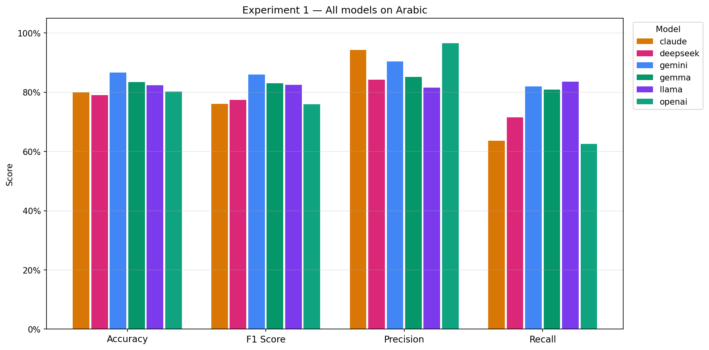
Figure 8: All models on Arabic. Gemini leads; LLaMA and Gemma outperform both Claude and GPT-4o-mini on F1.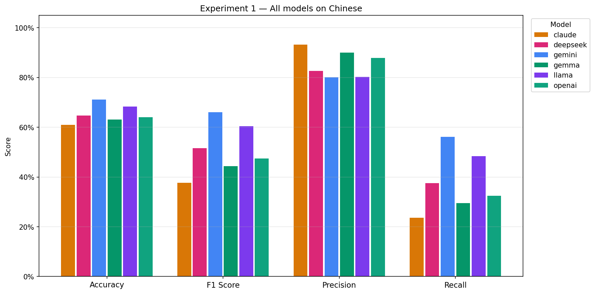
Figure 9: All models on Chinese. All models struggle; the performance gap relative to Arabic and Urdu is most extreme here. LLaMA 3 8B is the best local model on Chinese.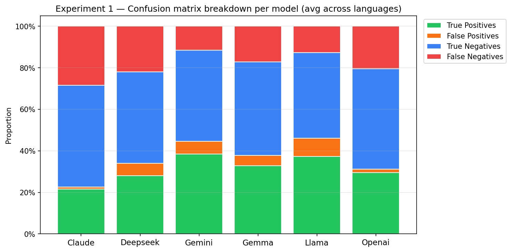
Figure 10: Proportional TP/FP/TN/FN breakdown per model (averaged across languages). Claude Haiku 4.5's extreme false-negative skew is clearly visible — it produces the most TN (conservative) but by far the most FN (missed cases).All six models show substantially lower F1 on Chinese compared to Arabic and Urdu. The best Chinese result — Gemini at F1=0.6606 — falls well below the best Arabic result (Gemini at 0.8600) and the best Urdu result (Gemini at 0.9016). This likely reflects the relative scarcity of Chinese mental health NLP data in model pretraining corpora, combined with the cultural distance between Chinese social media expression conventions and Western clinical vocabulary. A consistent pattern across all Chinese results is very high precision but very low recall: models are reluctant to classify Chinese posts as depressed, leading to many missed cases (false negatives). On average across all models, recall on Chinese is 0.38 versus 0.74 on Arabic and 0.76 on Urdu.
A critical finding for practical deployment: LLaMA 3 8B achieves F1=0.8630 on Urdu (vs. Gemini's 0.9016 and GPT-4o-mini's 0.8864) and F1=0.8255 on Arabic (vs. Gemini's 0.8600). Gemma 8B similarly achieves F1=0.8722 on Urdu and 0.8302 on Arabic. These results demonstrate that, for Arabic and Urdu at least, local models running on consumer hardware can provide classification quality approaching the best commercial APIs — a compelling finding for privacy-preserving deployment in clinical or social work contexts where data sovereignty is important.
Claude Haiku 4.5 exhibits an extreme precision-recall imbalance across all languages, particularly on Chinese (precision=0.932, recall=0.236, F1=0.377) and Urdu (precision=0.980, recall=0.420, F1=0.588). Claude generates almost no false positives — it virtually never incorrectly flags a non-depressed post as depressed — but it misses the majority of depressed posts. On Chinese, it correctly identifies only 591 of 2,500 depressed posts (23.6%). This pattern appears to reflect safety alignment training that produces a strong prior against flagging content as indicative of mental health distress, even when clear clinical signals are present. For depression screening applications where missing a depressed individual is far more costly than a false alarm, Claude Haiku 4.5 is not suitable as a primary classifier.
GPT-4o-mini also shows a consistent precision-over-recall bias: on Arabic (precision=0.966, recall=0.626), it correctly identifies almost all posts it classifies as depressed, but misses 936 of 2,500 genuinely depressed posts. This conservative behavior was documented in Milestone 2 and persists at scale. On Urdu, GPT-4o-mini achieves near-parity with Gemini (F1=0.886 vs. 0.902), but its Chinese performance (F1=0.474) reveals how this conservative prior becomes catastrophic when the model lacks strong language-specific signal.
Despite being described as "multilingual-tuned," DeepSeek 8B consistently underperforms LLaMA 3 8B and Gemma 8B. On Urdu, it achieves only F1=0.677 — well below LLaMA (0.863) and Gemma (0.872). On Chinese, it achieves F1=0.516, above Gemma (0.444) and Claude (0.377) but below LLaMA (0.604). On Arabic it also falls below both LLaMA and Gemma. This suggests that the multilingual tuning in this DeepSeek variant does not generalize well to the languages and domains represented in our evaluation.
| Model | Language | Entries w/ Keywords | Avg Keywords/Entry | Unique Keywords |
|---|---|---|---|---|
| Gemini 2.0 Flash | Arabic | 4,996 (99.9%) | 2.29 | 4,236 |
| Gemini 2.0 Flash | Urdu | 5,000 (100%) | 2.25 | 3,524 |
| Gemini 2.0 Flash | Chinese | 5,000 (100%) | 2.17 | 5,238 |
| GPT-4o-mini | Arabic | 4,950 (99.0%) | 2.85 | 5,570 |
| GPT-4o-mini | Urdu | 4,958 (99.2%) | 2.52 | 4,073 |
| GPT-4o-mini | Chinese | 4,970 (99.4%) | 2.85 | 7,602 |
| Claude Haiku 4.5 | Arabic | 5,000 (100%) | 2.94 | 7,221 |
| Claude Haiku 4.5 | Urdu | 5,000 (100%) | 2.25 | 4,356 |
| Claude Haiku 4.5 | Chinese | 5,000 (100%) | 2.66 | 7,592 |
| LLaMA 3 8B | Arabic | 5,000 (100%) | 1.88 | 4,235 |
| LLaMA 3 8B | Urdu | 5,000 (100%) | 2.01 | 3,089 |
| LLaMA 3 8B | Chinese | 5,000 (100%) | 1.87 | 7,695 |
| Gemma 8B | Arabic | 4,988 (99.8%) | 3.68 | 8,857 |
| Gemma 8B | Urdu | 4,999 (100%) | 2.85 | 5,121 |
| Gemma 8B | Chinese | 5,000 (100%) | 3.65 | 11,101 |
| DeepSeek 8B | Arabic | 3,450 (69.0%) | 0.93 | 3,846 |
| DeepSeek 8B | Urdu | 3,456 (69.1%) | 1.66 | 4,093 |
| DeepSeek 8B | Chinese | 3,388 (67.8%) | 1.19 | 4,862 |
Table 5: Keyword extraction statistics by model and language. Note: DeepSeek 8B provided keywords for approximately 69% of entries per language, with noticeably sparser coverage than other models. All model/language combinations are included in comparisons.
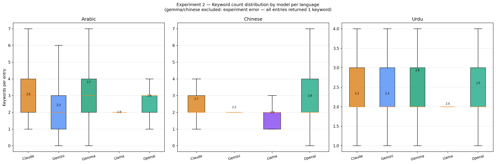
Figure 11: Distribution of keyword counts per entry, split by language. Each language shown in a separate panel. Most models cluster around 2–3 keywords per entry. DeepSeek shows a concentration near 0–1 due to its lower keyword coverage (~69%).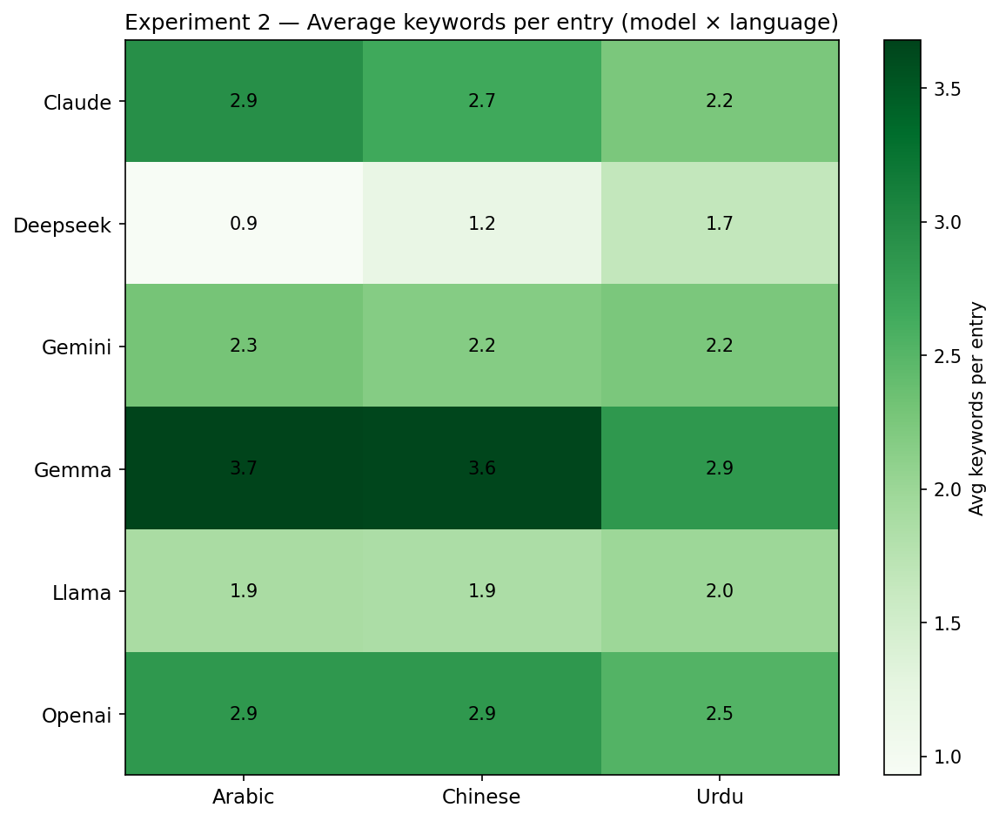
Figure 12: Average keyword count per entry across all model × language combinations. Gemma leads on both Arabic (3.68) and Chinese (3.65), the two highest values across all combinations. DeepSeek has the lowest average volume overall due to only ~69% keyword coverage per language.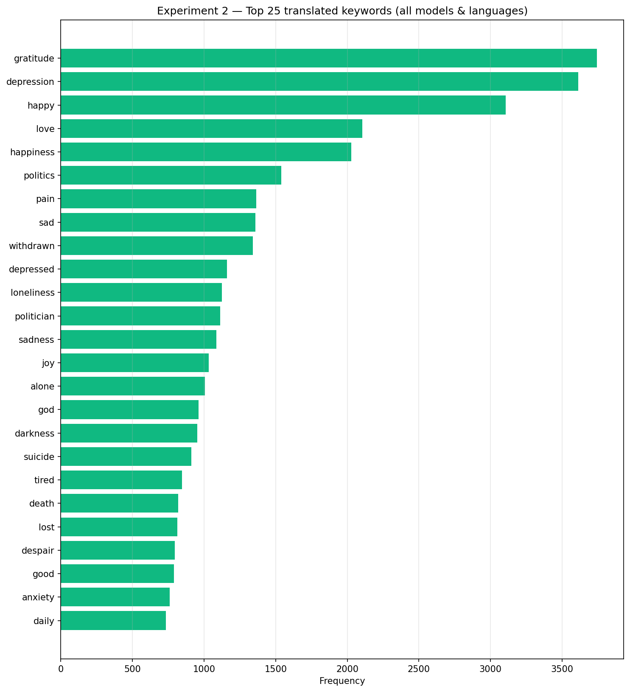
Figure 13: Top 25 most frequently cited translated keywords across all models and languages. "Gratitude" leads at 3,744 occurrences, followed by "depression" (3,613) and "happy" (3,105).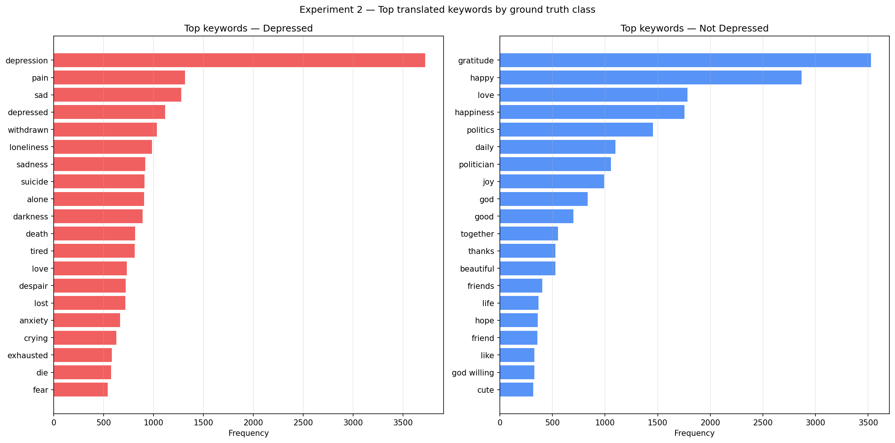
Figure 14: Top keywords split by ground truth class (depressed vs. not depressed). Clinical signal terms (pain, despair, suicide, hopeless) cluster in the depressed column; positive affect terms (happy, gratitude, love) cluster in the not-depressed column.The global top keywords reveal both expected clinical signals (depression, pain, suicide, sad, despair, darkness) and two surprises that illuminate systematic model biases:
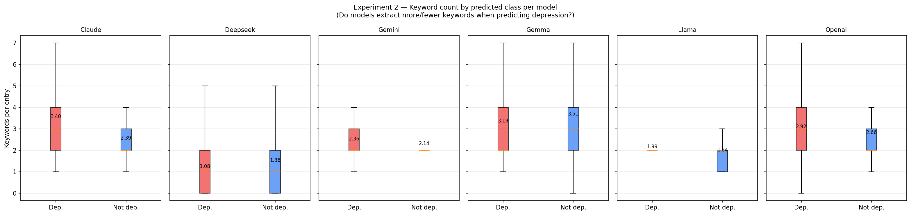
Figure 15: Average keyword count for "Depressed" vs. "Not Depressed" predictions per model. Models consistently cite slightly more keywords when predicting depression, suggesting greater lexical attention when identifying distress signals.A key diagnostic question is whether keyword behaviour differs between correctly and incorrectly classified posts. If models cite different numbers or types of keywords on misclassified posts, this provides evidence about the nature of the failure — whether it is lexical (the model found the wrong words) or semantic (it found the right words but drew the wrong conclusion).
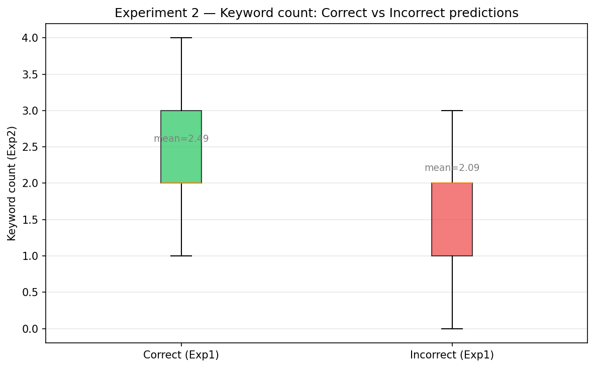
Figure 16: Keyword counts for correctly classified vs. incorrectly classified posts, broken down by model and language. Posts that models misclassify tend to receive a different number of keywords — suggesting that keyword volume is partially linked to prediction confidence.Before translation to English, models also returned keywords in the original language (Arabic, Urdu, Chinese). Analysing these native-language keywords reveals what linguistic surface features models directly engaged with in the original text, without the normalizing effect of translation.
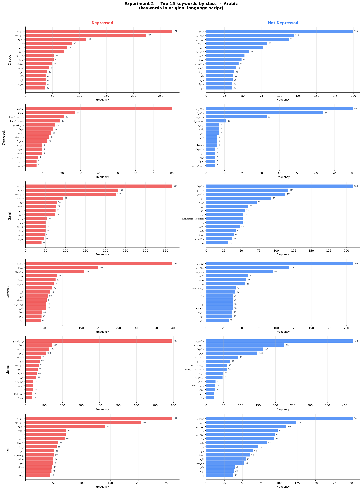
Figure 17: Top native-language (Arabic script) keywords cited across models on the Arabic dataset. Religious and emotional terms dominate — confirming that models engage directly with Arabic-script vocabulary rather than pattern-matching on transliteration.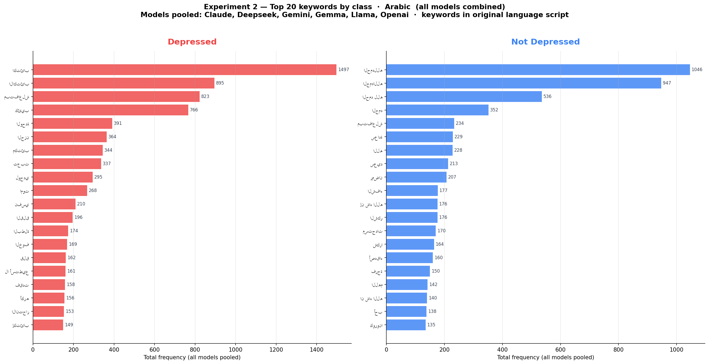
Figure 18: Combined view of native Arabic keywords with their English translation equivalents and frequency. The co-occurrence of Islamic religious terms and mental health vocabulary illustrates the challenge of disambiguation.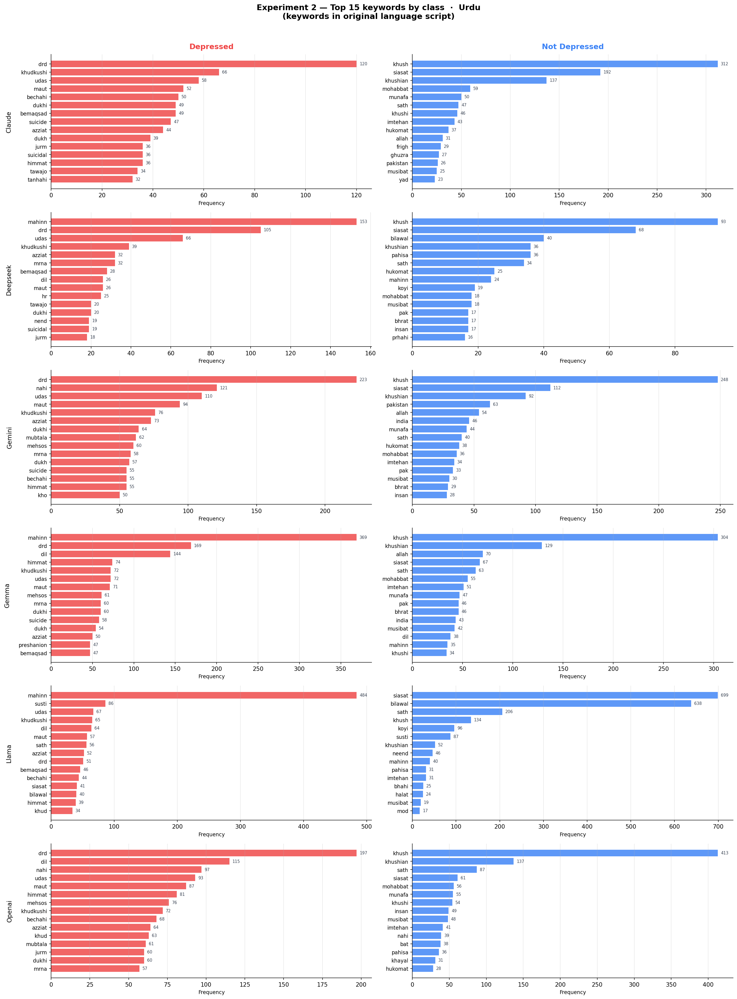
Figure 19: Top native-language (Romanized Urdu) keywords. Urdu uses a distinctive code-mixed register blending Roman Urdu, native vocabulary, and English loan words — all of which appear in the keyword vocabulary.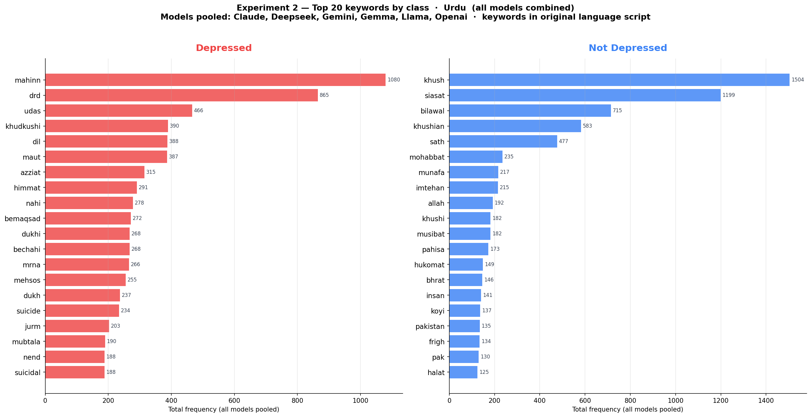
Figure 20: Combined native Urdu keyword view with translations. Poetic register terms and culturally specific distress expressions appear alongside standard clinical vocabulary, illustrating the richness of Urdu mental health expression.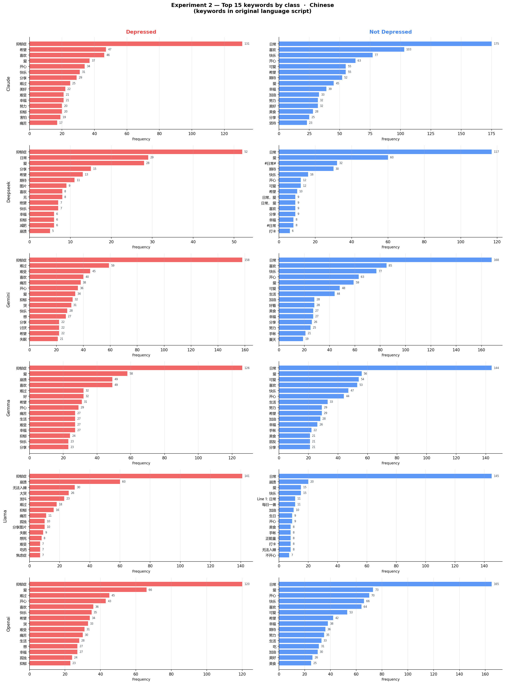
Figure 21: Top native-language (Simplified Chinese) keywords. The vocabulary is sparser relative to Arabic and Urdu — reflecting both the lower keyword count averages for Chinese and the model difficulty with Chinese-specific distress expression.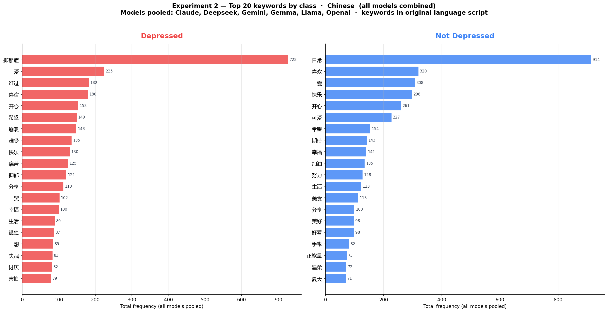
Figure 22: Combined native Chinese keyword view with translations. The gap between Chinese mental health vocabulary and Western clinical terminology is visible in the translation pairings — many Chinese distress expressions lack direct clinical equivalents.Keyword extraction enables a form of error analysis that would otherwise require native speaker annotation: when a model misclassifies a post, the keywords it cites reveal why. Below we highlight selected examples where keyword evidence reveals systematic failure modes.
| Model | Language | Total | Agree | Disagree | Agreement Rate | Flip Rate |
|---|---|---|---|---|---|---|
| DeepSeek 8B | Arabic | 5,000 | 4,215 | 167 | 96.19% | 3.34% |
| DeepSeek 8B | Chinese | 5,000 | 3,888 | 159 | 96.07% | 3.18% |
| DeepSeek 8B | Urdu | 5,000 | 12 | 0 | —* | — |
| Gemini 2.0 Flash | Arabic | 5,000 | 4,688 | 308 | 93.84% | 6.16% |
| Gemini 2.0 Flash | Chinese | 5,000 | 4,657 | 339 | 93.21% | 6.78% |
| Gemini 2.0 Flash | Urdu | 5,000 | 4,186 | 807 | 83.84% | 16.14% |
| Gemma 8B | Arabic | 5,000 | 4,581 | 375 | 92.43% | 7.50% |
| Gemma 8B | Chinese | 5,000 | 4,375 | 579 | 88.31% | 11.58% |
| Gemma 8B | Urdu | 5,000 | 8 | 5 | —* | — |
| GPT-4o-mini | Arabic | 5,000 | 4,106 | 865 | 82.60% | 17.30% |
| GPT-4o-mini | Chinese | 5,000 | 4,107 | 890 | 82.19% | 17.80% |
| GPT-4o-mini | Urdu | 5,000 | 3,983 | 1,013 | 79.72% | 20.26% |
| LLaMA 3 8B | Arabic | 5,000 | 3,648 | 1,020 | 78.15% | 20.40% |
| LLaMA 3 8B | Chinese | 5,000 | 2,400 | 2,179 | 52.41% | 43.58% |
| LLaMA 3 8B | Urdu | 5,000 | 3,003 | 1,710 | 63.72% | 34.20% |
Table 6: Experiment 3 agreement summary for all 5 models (Claude excluded). Agreement rate = proportion of valid responses where the model upholds its original classification when shown the English translation. *DeepSeek Urdu and Gemma Urdu results are unreliable — the model process failed after 12 and 13 samples respectively (4,972 and 4,987 entries returned no response), and are excluded from comparisons. DeepSeek leads on Arabic and Chinese; LLaMA shows substantially lower consistency, especially on Chinese (52.41%).
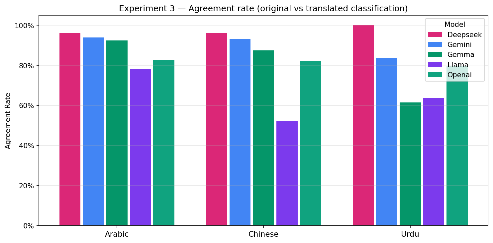
Figure 23: Agreement rates per model and language (all 5 models). DeepSeek achieves the highest consistency on Arabic and Chinese (~96%); LLaMA shows the lowest, especially on Chinese (52.41%). Urdu results for DeepSeek and Gemma are excluded (model failures with <20 valid samples).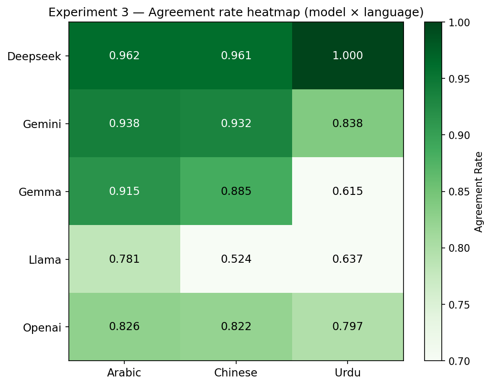
Figure 24: Agreement rate heatmap: model × language. The contrast between DeepSeek/Gemini (top rows, dark blue) and LLaMA (bottom row, light) is clear. Urdu is the most inconsistent language overall across all valid results.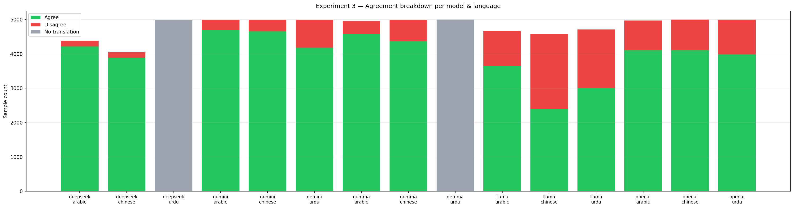
Figure 25: Stacked bar chart showing agree/disagree counts by model and language. LLaMA on Chinese (2,179 flips) shows the most disagreement; DeepSeek on Arabic and Chinese shows the fewest flips among valid results.Among all models with valid results (excluding DeepSeek and Gemma on Urdu where the run failed after fewer than 15 samples), DeepSeek 8B achieves the highest agreement rates on both Arabic (96.19%) and Chinese (96.07%). This is notably higher than Gemini (93.84% / 93.21%) and GPT-4o-mini (82.60% / 82.19%). DeepSeek's very low flip rates (3.18–3.34%) suggest its classifications are highly stable across language presentations — though whether this reflects robust semantic grounding or a narrow decision boundary that is hard to shift is worth further investigation.
Among the two online models with complete valid results, Gemini upholds its original classifications 83.84–93.84% of the time, compared to 79.72–82.60% for GPT-4o-mini. The gap is most pronounced on Arabic (Gemini: 93.84% vs. GPT-4o-mini: 82.60%) and Chinese (93.21% vs. 82.19%). GPT-4o-mini's lower consistency indicates that approximately 17–20% of its classifications may be influenced by language-specific surface patterns rather than underlying semantic content.
LLaMA 3 8B has the lowest agreement rates among all models with valid results: 78.15% on Arabic, 63.72% on Urdu, and only 52.41% on Chinese. A 52.41% agreement rate on Chinese is barely above chance — meaning LLaMA's Exp1 Chinese classifications are nearly indistinguishable from random re-labelling when the same content is presented in English. This is consistent with LLaMA's classification performance in Exp1 (F1=0.604 on Chinese, the best local model but still weak) and suggests that LLaMA's Chinese decisions rely heavily on surface language features that do not survive translation.
Both Gemini and GPT-4o-mini show higher flip rates on Urdu (16.14% and 20.26%) than on Arabic or Chinese. For LLaMA, the flip rate on Urdu (34.20%) is also lower than on Chinese (43.58%), but Urdu still shows substantial instability. This may reflect transliteration loss in the Cohere translations — poetic expressions and culturally embedded Urdu idioms may not survive translation as faithfully as Arabic or Chinese text.
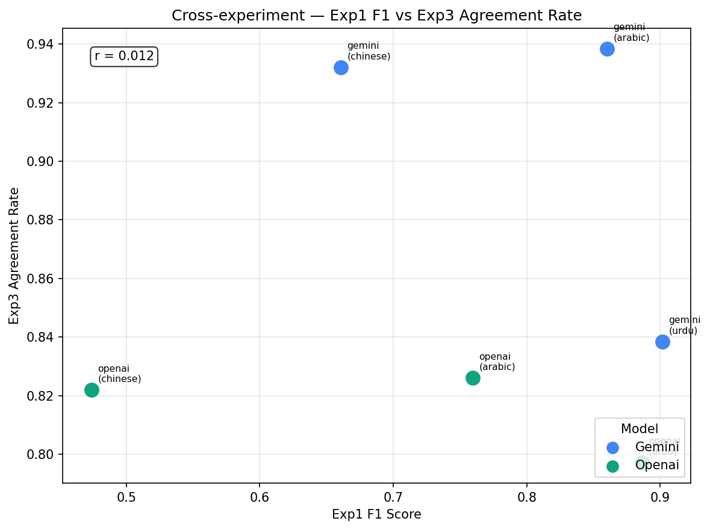
Figure 26: Scatter plot of Exp1 F1 score vs. Exp3 agreement rate per model–language combination (all 5 models, excluding Claude and unreliable Gemma/DeepSeek Urdu cells). Models with higher accuracy tend to agree more with themselves in translation. DeepSeek and Gemini cluster in the upper-right on Arabic and Chinese; LLaMA Chinese sits in the lower-left (low F1, low consistency).Experiment 3 disagreements can be decomposed into four clinically meaningful categories based on the model's original correctness (Exp1) and whether it changes its decision (Exp3):
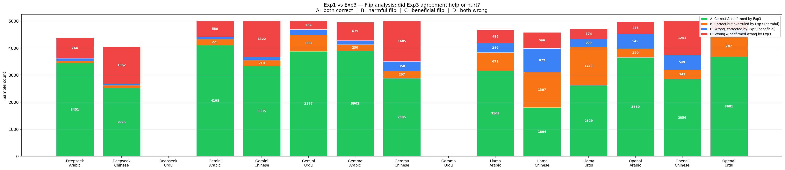
Figure 27: Stacked bar chart showing the four flip categories per model and language. The relative proportions of harmful vs. beneficial flips reveal whether translation tends to help or hurt decision quality.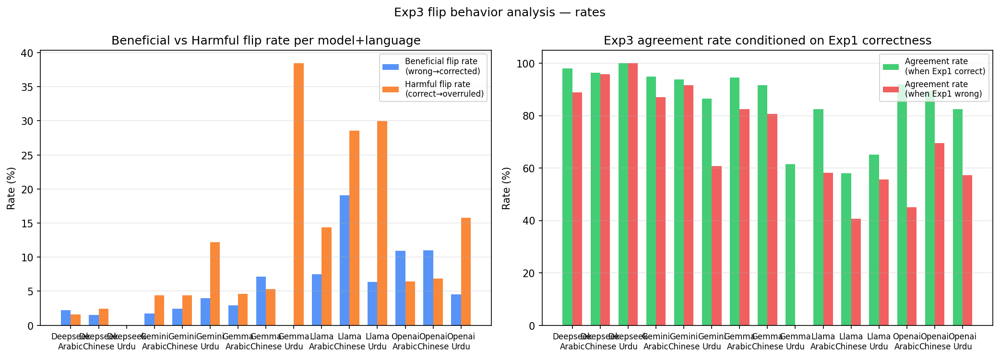
Figure 28: Harmful flip rate (B) and beneficial flip rate (C) by model and language. A model with more C than B flips overall benefits from translation; a model with more B than C flips is harmed by it.Experiment 2 uses the same labels as Experiment 1, so accuracy is identical by construction. However, comparing the keyword quality and volume across models provides insight into whether the models that perform best on classification also exhibit more coherent keyword reasoning.
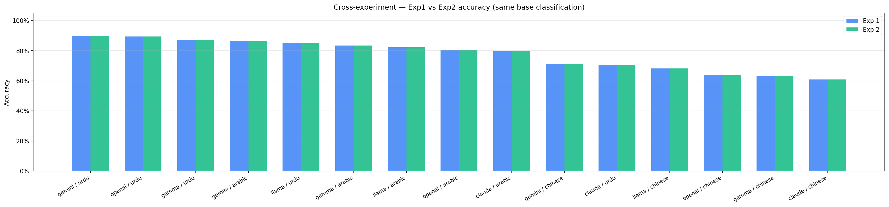
Figure 29: Exp1 vs. Exp2 accuracy comparison across model–language combinations. Since Exp2 reuses Exp1 labels, accuracy is identical — this plot confirms data pipeline consistency and highlights relative model performance across language tiers.A particularly informative diagnostic: of all the posts that models got wrong in Experiment 1, what fraction did they correct when shown the English translation in Experiment 3? A high beneficial flip rate on originally-wrong predictions would suggest that the translation is providing valuable disambiguation. A low rate suggests the model's errors are robust to translation — meaning the same wrong reasoning applies in both languages. The four-category flip analysis in Section 8.3 (Figures 27–28) directly captures this: the stacked bar chart (Figure 27) shows the relative proportions of all four categories (confirmed correct, harmful flip, beneficial flip, confirmed wrong), and Figure 28 isolates harmful vs. beneficial flip rates by model and language.
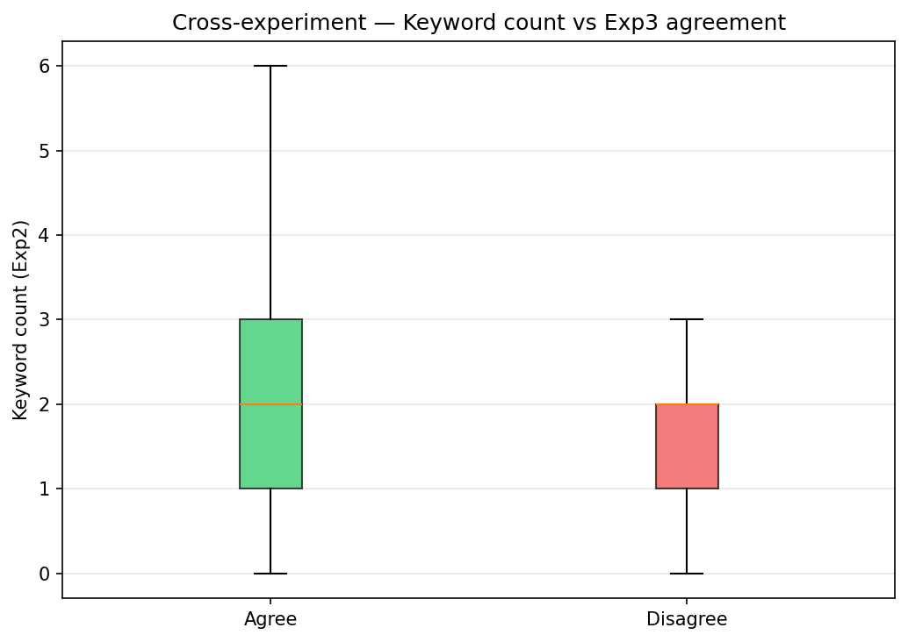
Figure 30: Keyword count (Exp2 average per entry) vs. agreement rate (Exp3) per model–language combination. A negative relationship would suggest that models citing more keywords are less stable — potentially over-fitting to surface lexical cues that change in translation.Experiment 2 asks models to identify keywords from the original-language post (Arabic, Urdu, or Chinese) and translate them to English. Experiment 3 asks models to identify keywords from the Cohere-translated English post. Comparing these two keyword sets provides a window into how well keyword reasoning is preserved across language representations of the same content.
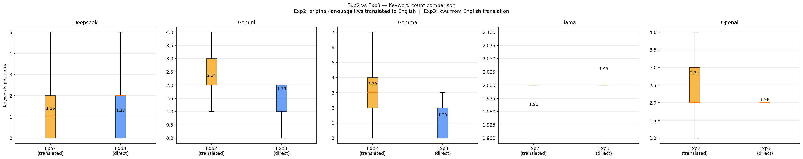
Figure 31: Side-by-side box plots of keyword counts from Exp2 (original-language) vs. Exp3 (English translated) per model. Models with similar counts in both conditions show more consistent reasoning behaviour across language representations.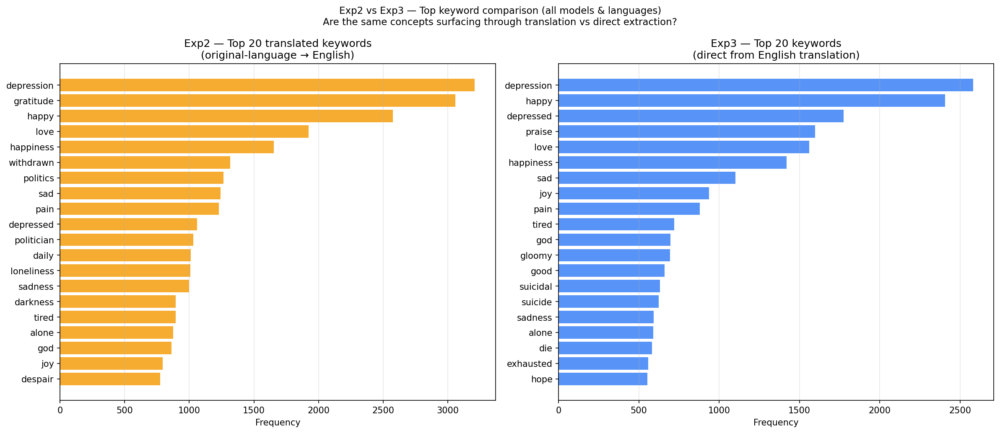
Figure 32: Top keywords cited in Exp2 vs. Exp3 side-by-side. Overlap indicates semantic consistency across language representations; divergence indicates that translation changed the model's lexical focus.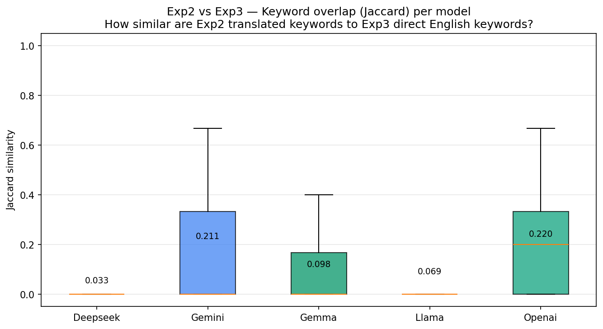
Figure 33: Jaccard similarity between Exp2 and Exp3 keyword sets per model (box plots). Higher Jaccard = more consistent lexical focus across language presentations. Among online models, Gemini shows higher Jaccard similarity than GPT-4o-mini, consistent with its higher agreement rates in Exp3.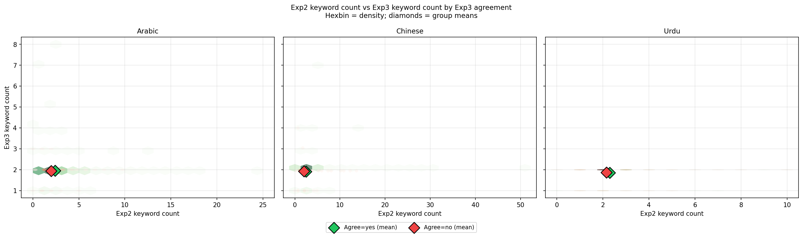
Figure 34: Hexbin density plot: Exp2 keyword count vs. Exp3 keyword count, coloured by Exp3 agreement. High-density clusters reveal the typical keyword usage pattern for consistent vs. inconsistent classifications.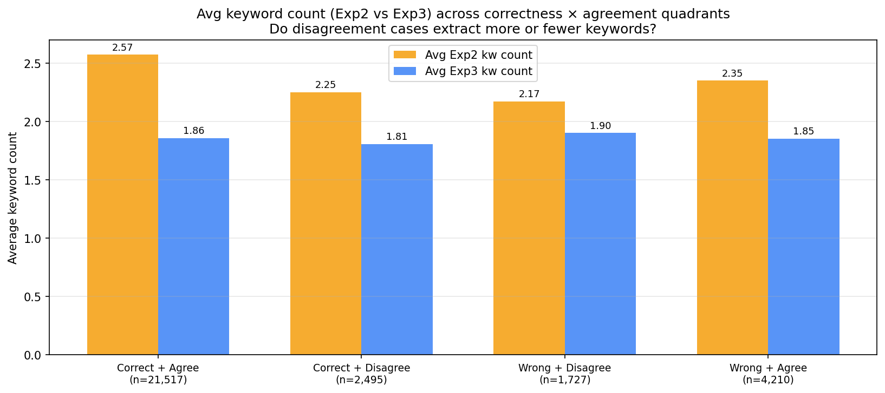
Figure 35: Quadrant bar chart categorising posts by high/low Exp2 and Exp3 keyword counts. Posts with high keyword counts in both experiments have rich lexical evidence in both languages; posts with high Exp2 but low Exp3 counts represent cases where translation collapsed the model's lexical attention — a marker of over-reliance on surface language cues.Across all three experiments, a consistent picture emerges that can be summarised in two complementary dimensions: reliability (how well the model classifies) and trust (how robustly and consistently it reasons). The figures below visualise where each model falls on these two axes.
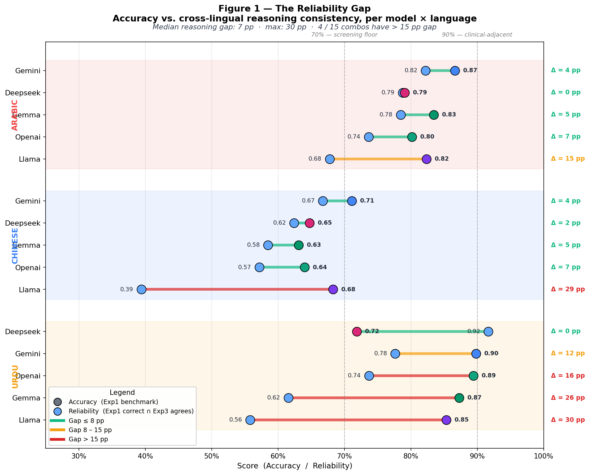
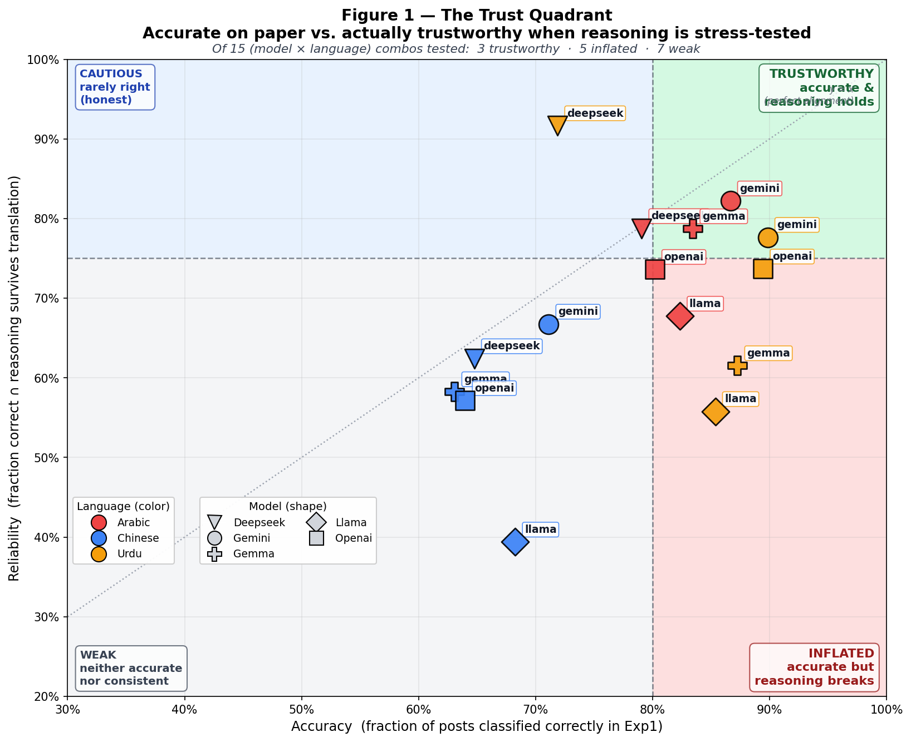
The trust quadrant makes the trade-off landscape concrete: Gemini occupies the high-accuracy, high-consistency quadrant; GPT-4o-mini achieves high precision but lower consistency; DeepSeek and Gemma show high cross-lingual consistency on Arabic and Chinese despite lower overall classification F1. LLaMA shows the lowest consistency, especially on Chinese. Claude was excluded from Exp3 — its extreme precision-recall imbalance (precision near 0.98, recall near 0.42 on Urdu) places it in an anomalous corner: highly specific but clinically unreliable for depression screening.
The results provide nuanced evidence for the viability of local open-weight models as privacy-preserving alternatives to commercial APIs. For Arabic and Urdu, LLaMA 3 8B and Gemma 8B achieve F1 scores within 3–8 percentage points of the best commercial API (Gemini 2.0 Flash), running entirely on local hardware with no data transmission to external servers. This makes them viable candidates for deployment in clinical settings with data sovereignty requirements or in low-resource environments where API costs are prohibitive.
However, for Chinese, the gap widens substantially: the best local model (LLaMA, F1=0.604) lags Gemini (0.661) by 5.7 points, and all models struggle. This likely reflects both the inherent difficulty of Chinese mental health NLP and the relative underrepresentation of Chinese mental health vocabulary in local model pretraining. DeepSeek 8B's underperformance relative to LLaMA and Gemma is unexpected given its "multilingual-tuned" designation — the specific languages and domains it was tuned on may not include the dialectal variants and domains in our datasets.
The clinical implications of the precision-recall trade-off are significant. In a depression screening context, false negatives (missed depression) are far more costly than false positives (false alarms): a false negative means a person in distress receives no intervention, while a false positive means an unnecessary but not harmful follow-up. Under this asymmetric cost structure:
The keyword analysis surfaces several recurring failure modes that are cultural and linguistic in origin, not merely statistical:
Experiment 3 introduces a novel evaluation dimension: not just what a model decides but how stable that decision is when the same content is presented in a different language. Among all models with valid Exp3 results, DeepSeek 8B achieves the highest consistency on Arabic and Chinese (96%), followed by Gemini (84–94%), Gemma (88–92% on Arabic/Chinese), GPT-4o-mini (80–82%), LLaMA (52–78%), and — excluded from Exp3 — Claude. The spread is wide: LLaMA's Chinese agreement rate of 52% means it is effectively re-randomising its classification when shown a translation of the same post.
Among online models specifically, Gemini's higher cross-lingual consistency (83–94%) compared to GPT-4o-mini (80–83%) suggests that Gemini's decisions are more deeply grounded in semantic content. A model that changes its mind 17–20% of the time when shown a translation of the same post is exhibiting reasoning instability that raises legitimate questions about deployment reliability, even when its aggregate accuracy appears high.
The four-category flip analysis further refines this picture: beneficial flips (wrong-to-right) are valuable because translation provides additional disambiguation; harmful flips (right-to-wrong) represent cases where translation introduced new confusion. A model with more harmful than beneficial flips is not merely unstable — it is being actively misled by the translation, suggesting its original reasoning was more aligned with the native language's surface features than with the underlying semantic content.
This project presents the most comprehensive comparative evaluation of LLMs for multilingual depression detection to date, covering six models across three languages and three experimental paradigms. Our key findings are:
These findings have direct practical implications for practitioners building multilingual mental health NLP tools. For screening applications, Gemini 2.0 Flash offers the best combination of high recall and cross-lingual stability. For privacy-preserving deployments, LLaMA 3 8B provides the best local model performance on Arabic and Urdu. For Chinese, all current models are insufficient for reliable clinical screening and should be augmented with human review. Future work should pursue Chinese-specific culturally grounded prompt engineering, ensemble approaches combining the complementary error profiles of Gemini (low FN) and GPT-4o-mini (low FP), and manual annotation by native-speaking mental health professionals to validate ground truth labels and categorise error types.
command-r-08-2024). Multilingual Translation API.CSCI 4055: Natural Language Processing — Ontario Tech University — April 2026
All figures are located in data_visualization/outputs/plots/. Open this HTML file from the project root directory in a web browser to view all embedded figures.
Phase 1 was a 500-sample pilot conducted in February–March 2026, before scaling to the 5,000-sample Phase 2 experiments. Its goals were to: (1) validate the evaluation pipeline end-to-end, (2) compare three prompt strategies (V1, V2, V3) against each other, (3) test a translate-then-classify approach to determine whether native-language processing was necessary, and (4) characterise model behavioural profiles to inform Phase 2 design decisions.
| Language | Sample Size | Depressed | Not Depressed | Severity Labels |
|---|---|---|---|---|
| Romanized Urdu | 500 | 250 | 250 | 85 mild / 86 moderate / 79 severe |
| Arabic (pilot) | 50 | 25 | 25 | Binary only |
Table A.1: Phase 1 dataset. The Urdu pilot was the primary evaluation; Arabic was a smaller proof-of-concept run.
Four models were evaluated in Phase 1 (GPT-4o-mini, Gemini 2.0 Flash, DeepSeek Chat, Claude Haiku 4.5). Each was run under four conditions:
| Model | V1 Acc. | V1 F1 | V2 Acc. | V2 F1 | V2 (Translated EN) F1 | V3 Acc. | V3 F1 |
|---|---|---|---|---|---|---|---|
| Gemini 2.0 Flash | 0.838 | 0.849 | 0.828 | 0.842 | 0.700 | 0.898 | 0.903 |
| GPT-4o-mini | 0.844 | 0.851 | 0.840 | 0.823 | 0.651 | 0.886 | 0.878 |
| DeepSeek Chat | 0.840 | 0.839 | 0.870 | 0.865 | 0.649 | 0.898 | 0.893 |
| Claude Haiku 4.5 | 0.740 | 0.668 | 0.623 | 0.397 | 0.404 | — | — |
Table A.2: Phase 1 Urdu results across all four experimental conditions. V3 results for Claude were incomplete (rate-limited) and are excluded. Translation consistently degrades F1 by 14–22 points.
| Severity | Total Posts | Gemini | GPT-4o-mini | DeepSeek | Claude |
|---|---|---|---|---|---|
| Severe | 79 | 98.7% | 93.7% | 94.9% | 74.7% |
| Moderate | 86 | 89.5% | 95.3% | 88.4% | 50.0% |
| Mild | 85 | 84.7% | 77.6% | 68.2% | 34.1% |
| Non-Depression | 250 | 74.0% specificity | 93.6% specificity | 90.4% specificity | 99.6% specificity |
Table A.3: Severity-stratified detection rates from Phase 1 (V2 prompt on Urdu, 500 samples). Mild depression is the critical failure zone for all models.
The severity gradient — severe being easiest to detect, mild being hardest — was consistent across all models. Severe posts typically contain explicit distress keywords (e.g., khudkushi / suicide, maut / death, azziat / torment), making them unambiguous. Mild posts describe behavioral symptoms (lethargy, appetite changes, concentration difficulties) without overtly sad vocabulary, making them indistinguishable from casual complaints without cultural knowledge.
| Model | Native F1 | Translated EN F1 | F1 Drop | Native Recall | Translated Recall | Recall Drop |
|---|---|---|---|---|---|---|
| Gemini 2.0 Flash | 0.842 | 0.700 | −0.142 | 0.916 | 0.596 | −0.320 |
| GPT-4o-mini | 0.823 | 0.651 | −0.172 | 0.744 | 0.512 | −0.232 |
| DeepSeek Chat | 0.865 | 0.649 | −0.216 | 0.836 | 0.500 | −0.336 |
| Claude Haiku 4.5 | 0.397 | 0.404 | +0.007 | 0.249 | 0.256 | +0.007 |
Table A.4: Translation experiment results. The models that perform best natively suffer the largest F1 drop in translation — they have learned to leverage Urdu-specific signals that translation destroys.
All prompts used in this project are defined in evaluation/prompts.py. The following subsections present each classification prompt in full, in the order of development.
The original baseline prompt. Minimal instruction with no clinical framework, no examples, and no language-specific guidance. Used as the V1 condition in Phase 1.
evaluation/prompts.py — CLASSIFICATION_PROMPT_V1You are evaluating a social media post for signs of depression.
Read the following post carefully and classify whether the author is expressing signs of depression or not.
Respond with ONLY one of these two labels, nothing else:
- Depressed
- Not Depressed
Post:
"{post_text}"
Classification:
The first major revision. Added explicit clinical depression indicators, a list of exclusion rules covering the most common false positive patterns, and an acknowledgment that posts may be in languages other than English. No examples provided (still zero-shot). Used as the V2 condition in Phase 1 and as the default CLASSIFICATION_PROMPT in the phase1 runner.
You are a mental health text classifier analyzing social media posts for signs of depression.
Consider these indicators of depression:
- Expressions of hopelessness, worthlessness, or emptiness
- Social withdrawal or isolation ("no one cares", "always alone")
- Loss of interest or pleasure in activities
- Sleep disturbances, fatigue, or low energy
- Negative self-talk or self-harm references
- Persistent sadness beyond normal situational reactions
Do NOT classify as depressed:
- Sarcasm or dark humor without genuine distress
- Temporary frustration or complaining about a specific event
- Song lyrics, quotes, or reposted content
- Using the word "depressed" casually ("this weather is depressing")
The post may be in any language or script (including transliterated text).
Classify the following post. Respond with ONLY one label:
- Depressed
- Not Depressed
Post:
"{post_text}"
Classification:
The Phase 2 production prompt for Romanized Urdu. Extends V2's clinical framework with six labeled Urdu examples drawn from the full dataset (verified not to overlap with the 5,000-sample test set). Each example targets a specific recurring failure mode identified in Phase 1 error analysis: behavioral/somatic depression (Examples 1, 4, 6), political commentary false positives (Example 2), Urdu shayri/ghazal false positives (Example 3), and short ambiguous posts (Example 5).
evaluation/prompts.py — CLASSIFICATION_PROMPT_V3 (Urdu)You are a mental health text classifier analyzing social media posts for signs of depression.
Consider these indicators of depression:
- Expressions of hopelessness, worthlessness, or emptiness
- Social withdrawal or isolation ("no one cares", "always alone")
- Loss of interest or pleasure in activities
- Sleep disturbances, fatigue, or low energy
- Negative self-talk or self-harm references
- Persistent sadness beyond normal situational reactions
- Behavioral symptoms: lethargy, neglecting self-care, appetite/sleep changes — even without explicitly sad language
Do NOT classify as depressed:
- Sarcasm or dark humor without genuine distress
- Temporary frustration or complaining about a specific event
- Song lyrics, quotes, poetry, or reposted content
- Using emotional words casually ("this weather is depressing")
- Political/societal commentary that uses intense emotional language but is not self-directed
- Third-person references to someone else's suffering
The post may be in any language or script (including Roman Urdu, transliterated text, or code-switched text mixing languages).
Here are examples to guide your classification:
Example 1:
Post: "aj mujhe bahut susti mehsos rahi kuch krne bilkul mod nahy"
Classification: Depressed
(Describes lethargy and complete lack of motivation — behavioral indicators of depression even without explicitly sad language.)
Example 2:
Post: "lakh g lanat hoggahi bilawal pehingi siasat j lahi wrri sindh khe mqm khe wikro krahi dio paya lanat hojahi tohinjahi taqder te begherat insan"
Classification: Not Depressed
(Political commentary expressing frustration about politicians. Uses strong emotional language but is about societal issues, not personal mental health.)
Example 3:
Post: "mera hr din teri hr rat acha hoga meri hr bat teri shayri achi hohi dekh lena gamgen ankho ek din mera janaza teri brat acha hoga"
Classification: Not Depressed
(Ghazal/shayri-style romantic poetry. Despite mentioning "gamgen ankho" (sorrowful eyes) and "janaza" (funeral), this is literary expression using conventional poetic vocabulary, not personal distress.)
Example 4:
Post: "hr pal hr sans mayosii andheron mahinn doba hahi mera dil"
Classification: Depressed
(Every moment, every breath, the heart drowning in despair and darkness. Although poetic in register, this expresses persistent personal hopelessness — a genuine expression of suffering, not a literary exercise.)
Example 5:
Post: "koyi hahi mere sath"
Classification: Not Depressed
(A short, ambiguous post meaning "is anyone with me" — this is a casual social query, not an expression of isolation or distress.)
Example 6:
Post: "mayosion saya meri zindagi hahi hr kadam thokr khata hon"
Classification: Depressed
(The shadow of hopelessness over my life, stumbling at every step. Expresses persistent despair and helplessness about one's own life.)
Now classify the following post. Respond with ONLY one label:
- Depressed
- Not Depressed
Post:
"{post_text}"
Classification:
The Phase 2 production prompt for Arabic. Mirrors V3's structure but with Arabic-specific failure mode guidance and examples drawn from the Arabic dataset (CairoDep and related corpora). Key Arabic-specific additions: explicit guidance on religious phrases (الحمدالله, إن شاء الله) as everyday expressions rather than distress signals, seasonal/hashtag posts (Ramadan, Eid) as community content, and behavioral absence words (مبتفاعلش, مبقتش) as strong depression indicators.
evaluation/prompts.py — CLASSIFICATION_PROMPT_V3_ARABICYou are a mental health text classifier analyzing social media posts for signs of depression.
Consider these indicators of depression:
- Expressions of hopelessness, worthlessness, or emptiness
- Social withdrawal or isolation ("no one cares", "always alone")
- Loss of interest or pleasure in activities
- Sleep disturbances, fatigue, or low energy
- Negative self-talk or self-harm references
- Persistent sadness beyond normal situational reactions
- Behavioral symptoms: loss of passion, neglecting responsibilities, inability to engage — even without explicitly sad language
Do NOT classify as depressed:
- Religious expressions or phrases (الحمد لله، إن شاء الله، السلام عليكم، يارب) — these are everyday Arabic greetings and expressions of faith, not distress
- Seasonal or community posts (Ramadan greetings, holiday posts, religious hashtags) — celebratory or communal, not personal suffering
- Relationship advice or venting about situational problems — temporary frustration, not clinical depression
- Interactive/rhetorical questions directed at followers — social engagement, not isolation
- Arabic poetry, song lyrics, or romantic language — literary expression, not personal distress
- Sarcasm or dark humor without genuine emotional distress
The post may be in Arabic script, Egyptian dialect (slang), standard Arabic, or a mix.
Here are examples to guide your classification:
Example 1:
Post: "فقدت الشغف تجاه مجال عملي بسبب كذا صدمة متتالية خاصة اخر صدمة دي دمرتني نفسيا خلتني كرهت كل حاجه كنت بحب مجالي جدا وبطور نفسي فيه باستمرار حاليا مبقتش اطيق افتح كتاب او اقعد قدام فيديو"
Classification: Depressed
(Lost all passion for work after repeated psychological shocks — behavioral depression indicator even without the word "sad".)
Example 2:
Post: "الحمدالله حمدا كثيرا"
Classification: Not Depressed
(A short religious phrase meaning "Praise be to God." Extremely common in Arabic social media as a simple expression of gratitude or faith — not a sign of depression.)
Example 3:
Post: "#رمضان_كريم يارب شهر الخير اقبل بالافراح لا تحرم اللي يرتجي منك غفران انزل علينا رحمة منك نرتاح"
Classification: Not Depressed
(Ramadan greeting with religious prayer. Seasonal community post — celebratory and collective, not personal distress despite emotional religious language.)
Example 4:
Post: "أشعر بالحزن الشديد بعد وفاة أمي وأشعر بالوحدة لأني لا أملك أصدقاء وأشعر بالخوف من أبي"
Classification: Depressed
(Intense sadness after bereavement, compounded by total social isolation and fear. Multiple simultaneous depression indicators clearly about the author's own suffering.)
Example 5:
Post: "ايه الحاجه اللي لو حصلتك دلوقتي تخليك #سعيد"
Classification: Not Depressed
(Meaning "What would make you happy right now?" — a casual interactive question to followers with a happiness hashtag. Social engagement post, not personal distress.)
Example 6:
Post: "والحقيقة آه طلعت وقتها كنت وحشة، مش وحشة بالمعنى الحرفي، انا بس مبتفاعلش معاهم.. بخرج عشان اقعد اسمع اغاني لوحدي"
Classification: Depressed
(Describes persistent social withdrawal — not interacting with others, choosing to be alone. Behavioral isolation is a key depression indicator even when described casually.)
Now classify the following post. Respond with ONLY one label:
- Depressed
- Not Depressed
Post:
"{post_text}"
Classification:
The Phase 2 production prompt for Chinese. Based on the Chinese Weibo Depression Dataset (Simplified Chinese). Addresses Chinese-specific failure modes: physical illness posts, fandom/celebrity content, philosophical quotes, lifestyle posts (beauty, skincare, food), and the opposite direction — clinical self-disclosure (双向情感障碍 / bipolar disorder, 抑郁症 / depression) and relapse language (复发) that are specific and strong indicators.
evaluation/prompts.py — CLASSIFICATION_PROMPT_V3_CHINESEYou are a mental health text classifier analyzing social media posts for signs of depression.
Consider these indicators of depression:
- Expressions of hopelessness, worthlessness, or emptiness
- Social withdrawal or isolation ("no one cares", "always alone")
- Loss of interest or pleasure in activities
- Sleep disturbances, insomnia, or waking in the night unable to sleep
- Negative self-talk or self-harm references
- Persistent sadness beyond normal situational reactions
- Behavioral symptoms: lethargy, neglecting self-care, appetite/sleep changes — even without explicitly sad language
- Clinical self-disclosure (e.g., 双向情感障碍, 抑郁症) combined with helplessness signals
- Relapse language (复发) combined with emotional distress
Do NOT classify as depressed:
- Temporary physical illness complaints (感冒, 发烧) — bodily discomfort is not depression
- Fandom, celebrity, or online community posts — social engagement content, not personal mental health
- Philosophical quotes or inspirational sayings being shared with appreciation
- Lifestyle, beauty, skincare, food, or hobby posts — engaged daily life, not distress
- Sarcasm or dark humor without genuine emotional suffering
- Song lyrics, poetry, or quoted content
- Using emotional words casually or in internet slang context
The post may be in Simplified Chinese, Traditional Chinese, Pinyin, or code-switched text mixing Chinese with English.
Here are examples to guide your classification:
Example 1:
Post: "我离崩溃只差一片羽毛的重量，多梦就罢了为什么又在凌晨醒来无法入睡，身体还一直发抖，我真的想大哭，我真的受不了了，我好可笑啊我我居然变成了这副模样"
Classification: Depressed
(On the verge of complete breakdown — persistent insomnia, body trembling, overwhelming urge to cry, self-deprecation. Multiple severe simultaneous depression indicators all about personal suffering.)
Example 2:
Post: "生病了也要臭美一下[挖鼻屎][挖鼻屎]"
Classification: Not Depressed
(Lighthearted selfie post while sick, with playful emoji. Physical illness described with humor — casual lifestyle content, not emotional distress.)
Example 3:
Post: "左眼泪流复发，or可能只是累了break"
Classification: Depressed
(The word 复发 (relapse) signals the author knows they have a recurring condition; tearing up and acknowledging it is a sign of an emotional episode, not just tiredness.)
Example 4:
Post: "双向情感障碍症 顺其自然的意思就是 我也很无奈随他妈便吧."
Classification: Depressed
(Explicit self-report of bipolar disorder combined with 无奈 (helplessness) and resigned frustration — personal clinical disclosure paired with emotional collapse signals.)
Example 5:
Post: "开学 week9 #日常#日常这周格外爱胶片风！"
Classification: Not Depressed
(School week update with enthusiastic hashtags about film aesthetic — active, engaged daily life post, not personal distress.)
Example 6:
Post: "在与粉刺斗争的道路上一去不复返简单总结下就是Dr.wu杏仁酸与理肤泉k乳都能让闭口变成痘爆出来，有用是有用但忍不住去挤会留下无数痘印，下一步：菌菇水！期待烂脸恢复的那天呐"
Classification: Not Depressed
(Detailed skincare product review and routine planning — practical lifestyle content about cosmetic concerns, completely unrelated to emotional or mental health suffering.)
Now classify the following post. Respond with ONLY one label:
- Depressed
- Not Depressed
Post:
"{post_text}"
Classification:
Experiment 2 uses a separate set of prompts that do not re-classify posts — the classification from Experiment 1 is given as input. Instead, these prompts ask models to identify the 1–2 keywords in the post that most supported the given classification, plus their English translations. The output format is exactly two lines for easy automated parsing.
You are analyzing a mental health text classification.
A social media post in Roman Urdu has already been classified as "{prediction}".
Your task is to identify the specific word(s) in the post that support this classification.
Notes on Roman Urdu social media:
- Behavioral words (susti = lethargy, neend = sleep) are valid depression signals even without explicitly sad language
- Political commentary words (siasat, bilawal, lanat) indicate non-personal context
- Poetic vocabulary (shayri, janaza, gamgen) may indicate literary register, not personal distress
- Short ambiguous words alone are weak signals
Here are examples. Each shows the post, its classification, and the EXACT two-line response you must produce:
Example 1:
Post: "aj mujhe bahut susti mehsos rahi kuch krne bilkul mod nahy"
Classification: Depressed
susti, mod
lethargy, motivation
Example 2:
Post: "lakh g lanat hoggahi bilawal pehingi siasat j lahi wrri sindh khe mqm khe wikro krahi dio paya lanat hojahi tohinjahi taqder te begherat insan"
Classification: Not Depressed
lanat, siasat, bilawal
curse, politics, politician
Example 3:
Post: "mera hr din teri hr rat acha hoga meri hr bat teri shayri achi hohi dekh lena gamgen ankho ek din mera janaza teri brat acha hoga"
Classification: Not Depressed
janaza, shayri, gamgen
funeral, poetry, sorrowful
Example 4:
Post: "hr pal hr sans mayosii andheron mahinn doba hahi mera dil"
Classification: Depressed
mayosii, andheron, doba
despair, darkness, drowning
Example 5:
Post: "koyi hahi mere sath"
Classification: Not Depressed
koyi, sath
someone, together
Example 6:
Post: "mayosion saya meri zindagi hahi hr kadam thokr khata hon"
Classification: Depressed
mayosion, saya, thokr
hopelessness, shadow, stumble
Now respond for the following. Produce EXACTLY two lines — nothing else:
Line 1: the word(s) from the post that support the classification "{prediction}", in the original Roman Urdu, comma-separated
Line 2: one-word English translation of each, in the same order, comma-separated
Post:
"{post_text}"
Response:
You are analyzing a mental health text classification.
A social media post in Arabic (Egyptian dialect) has already been classified as "{prediction}".
Your task is to identify the specific word(s) in the post that support this classification.
Notes on Arabic social media:
- Religious phrases (الحمدالله، إن شاء الله) are everyday expressions, not depression signals
- Seasonal/hashtag posts (رمضان, عيد) indicate community context, not personal distress
- Behavioral absence words (مبتفاعلش = not interacting, مبقتش = no longer) are strong depression signals
- Grief and isolation words (الحزن، الوحدة، الخوف) are direct depression indicators
- Rhetorical questions to followers are social engagement, not isolation
Here are examples. Each shows the post, its classification, and the EXACT two-line response you must produce:
Example 1:
Post: "فقدت الشغف تجاه مجال عملي بسبب كذا صدمة متتالية خاصة اخر صدمة دي دمرتني نفسيا خلتني كرهت كل حاجه كنت بحب مجالي جدا وبطور نفسي فيه باستمرار حاليا مبقتش اطيق افتح كتاب او اقعد قدام فيديو"
Classification: Depressed
فقدت, دمرتني, مبقتش
lost, destroyed, no longer
Example 2:
Post: "الحمدالله حمدا كثيرا"
Classification: Not Depressed
الحمدالله
gratitude
Example 3:
Post: "#رمضان_كريم يارب شهر الخير اقبل بالافراح لا تحرم اللي يرتجي منك غفران انزل علينا رحمة منك نرتاح"
Classification: Not Depressed
رمضان, الافراح
Ramadan, joy
Example 4:
Post: "أشعر بالحزن الشديد بعد وفاة أمي وأشعر بالوحدة لأني لا أملك أصدقاء وأشعر بالخوف من أبي"
Classification: Depressed
الحزن, الوحدة, الخوف
sadness, loneliness, fear
Example 5:
Post: "ايه الحاجه اللي لو حصلتك دلوقتي تخليك #سعيد"
Classification: Not Depressed
سعيد
happy
Example 6:
Post: "والحقيقة آه طلعت وقتها كنت وحشة، مش وحشة بالمعنى الحرفي، انا بس مبتفاعلش معاهم.. بخرج عشان اقعد اسمع اغاني لوحدي"
Classification: Depressed
مبتفاعلش, لوحدي
withdrawn, alone
Now respond for the following. Produce EXACTLY two lines — nothing else:
Line 1: the word(s) from the post that support the classification "{prediction}", in the original Arabic, comma-separated
Line 2: one-word English translation of each, in the same order, comma-separated
Post:
"{post_text}"
Response:
You are analyzing a mental health text classification.
A social media post in Chinese (Weibo) has already been classified as "{prediction}".
Your task is to identify the specific word(s) in the post that support this classification.
Notes on Chinese social media:
- Clinical terms (双向情感障碍, 抑郁症) combined with helplessness are strong depression signals
- Relapse language (复发) combined with distress words are strong signals
- Physical illness words (感冒, 发烧) without emotional context are NOT depression signals
- Lifestyle/beauty/hobby content words indicate non-depressed context
- Philosophical or inspirational phrases indicate non-depressed sharing
Here are examples. Each shows the post, its classification, and the EXACT two-line response you must produce:
Example 1:
Post: "我离崩溃只差一片羽毛的重量，多梦就罢了为什么又在凌晨醒来无法入睡，身体还一直发抖，我真的想大哭，我真的受不了了，我好可笑啊我我居然变成了这副模样"
Classification: Depressed
崩溃, 无法入睡, 发抖, 大哭
collapse, insomnia, trembling, crying
Example 2:
Post: "生病了也要臭美一下[挖鼻屎][挖鼻屎]"
Classification: Not Depressed
臭美, 生病
vanity, sickness
Example 3:
Post: "左眼泪流复发，or可能只是累了break"
Classification: Depressed
复发, 泪流
relapse, tearing
Example 4:
Post: "双向情感障碍症 顺其自然的意思就是 我也很无奈随他妈便吧."
Classification: Depressed
双向情感障碍, 无奈
bipolar, helpless
Example 5:
Post: "开学 week9 #日常#日常这周格外爱胶片风！"
Classification: Not Depressed
日常, 爱
daily, love
Example 6:
Post: "在与粉刺斗争的道路上一去不复返简单总结下就是Dr.wu杏仁酸与理肤泉k乳都能让闭口变成痘爆出来，有用是有用但忍不住去挤会留下无数痘印，下一步：菌菇水！期待烂脸恢复的那天呐"
Classification: Not Depressed
粉刺, 期待
acne, anticipation
Now respond for the following. Produce EXACTLY two lines — nothing else:
Line 1: the word(s) from the post that support the classification "{prediction}", in the original Chinese, comma-separated
Line 2: one-word English translation of each, in the same order, comma-separated
Post:
"{post_text}"
Response:
A single universal prompt is used for Experiment 3 across all three languages. Unlike the classification prompts, which are language-specific, this prompt operates on the Cohere-translated English text and does not need language-specific tailoring. The model is given its own Experiment 1 prediction and asked whether the English translation still supports it, and to identify 1–2 central English keywords from the translation.
evaluation/prompts.py — CONSISTENCY_PROMPT_EXP3 (Universal — all languages)You are reviewing a mental health text classification for cross-lingual consistency.
A social media post originally written in {original_language} was previously classified as "{prediction}".
You are now shown the English translation of that same post.
Does the English translation support the "{prediction}" classification?
Identify 1-2 key English words from the translation that are most central to the "{prediction}" decision.
Produce EXACTLY two lines — nothing else:
Line 1: 1-2 key English words from the translation, comma-separated
Line 2: yes (the translation supports "{prediction}") or no (it does not)
Translation:
"{post_text}"
Response:
{prediction} — the model's own Experiment 1 label ("Depressed" or "Not Depressed"){original_language} — the language the original post was written in ("Arabic", "Romanized Urdu", or "Chinese"){post_text} — the Cohere English translation of the original post| Key | Prompt | Used In | Language(s) |
|---|---|---|---|
"v1" | CLASSIFICATION_PROMPT_V1 | Phase 1 Exp 1 | All (universal) |
"v2" | CLASSIFICATION_PROMPT_V2 | Phase 1 Exp 2 & Translation | All (universal) |
"v3" | CLASSIFICATION_PROMPT_V3 | Phase 1 Exp 4 & Phase 2 Exp 1–3 | Romanized Urdu |
"v3_arabic" | CLASSIFICATION_PROMPT_V3_ARABIC | Phase 2 Exp 1–3 | Arabic |
"v3_chinese" | CLASSIFICATION_PROMPT_V3_CHINESE | Phase 2 Exp 1–3 | Chinese |
"v3_exp2" | ATTRIBUTION_PROMPT_V3_EXP2 | Phase 2 Exp 2 | Romanized Urdu |
"v3_arabic_exp2" | ATTRIBUTION_PROMPT_V3_ARABIC_EXP2 | Phase 2 Exp 2 | Arabic |
"v3_chinese_exp2" | ATTRIBUTION_PROMPT_V3_CHINESE_EXP2 | Phase 2 Exp 2 | Chinese |
"v3_exp3" | CONSISTENCY_PROMPT_EXP3 | Phase 2 Exp 3 | All (universal) |
Table D.1: Complete prompt registry from evaluation/prompts.py. Nine distinct prompts used across the full project.
Following Phase 1 V2 evaluation on the 500-sample Urdu dataset, a comprehensive error analysis was conducted examining all false positives and false negatives across all four models. The analysis identified nine recurring error categories, which directly informed the design of the V3 few-shot prompts and the Phase 2 experimental framework. Below is the complete taxonomy.
| Category | Est. Posts Affected | Type | Most Affected Model(s) |
|---|---|---|---|
| 1. Short post / insufficient context | ~58 | Both FP & FN | All models, esp. Claude (FN) |
| 2. Cultural/poetic/philosophical expression | ~35 | Both | Gemini, DeepSeek (FP); OpenAI, Claude (FN) |
| 3. Transliteration ambiguity | ~25 | Both | All models |
| 4. Sociopolitical / news commentary | ~22 | FP | Gemini (dominant) |
| 5. Non-Urdu foreign language posts | ~12 | FP | Gemini (dominant) |
| 6. Empathy / third-person references | ~10 | FP | Gemini, DeepSeek |
| 7. Sarcasm / dark humor / casual emotional language | ~15 | FP | Gemini, DeepSeek, OpenAI |
| 8. Behavioral / somatic symptoms without explicit emotional language | ~30 | FN | OpenAI, DeepSeek, Claude |
| 9. Code-switching (Urdu-English mix) | ~12 | Both | OpenAI, Claude |
Table E.1: Phase 1 Urdu error taxonomy. Some posts fall into multiple categories; counts represent the primary categorisation.
| Model Pair | Agreement (/500) | Agreement Rate |
|---|---|---|
| Gemini – OpenAI | ~422 | 84.4% |
| Gemini – DeepSeek | ~429 | 85.8% |
| Gemini – Claude | ~337 | 67.4% |
| OpenAI – DeepSeek | ~455 | 91.0% |
| OpenAI – Claude | ~377 | 75.4% |
| DeepSeek – Claude | ~395 | 79.0% |
Table E.2: Pairwise inter-model agreement on Phase 1 Urdu V2 predictions (500 samples). OpenAI–DeepSeek have the highest agreement (91.0%), reflecting their similar moderate-conservative posture. Gemini–Claude have the lowest agreement (67.4%), reflecting opposite ends of the precision-recall spectrum.
The models form three identifiable clusters: an aggressive cluster (Gemini: high recall, low specificity), a moderate cluster (OpenAI, DeepSeek: balanced), and a conservative cluster (Claude: high specificity, very low recall). Posts where all four models agree incorrectly represent the hardest cases in the dataset — typically universal FPs on culturally loaded language (e.g., "zindagi itne rang dikhae k sirf black colour acha igta") and universal FNs on very short mild-severity posts.
| Model | Acc Δ (V1→V2) | F1 Δ | FP Δ | FN Δ | Interpretation |
|---|---|---|---|---|---|
| Gemini 2.0 Flash | −0.010 | −0.007 | +7 | −2 | Slight degradation; classification behaviour largely unaffected by prompt changes |
| GPT-4o-mini | −0.004 | −0.028 | −34 | +36 | Major shift to conservative; 34 fewer FPs but 36 more FNs — near-zero-sum trade |
| DeepSeek Chat | +0.030 | +0.026 | −15 | 0 | Clean improvement; only model to benefit from V2 without sacrificing recall |
| Claude Haiku 4.5 | −0.117 | −0.271 | −10 | +68 | Dramatic collapse; V2 wording triggered extreme over-conservatism in an already-conservative model |
Table E.3: Effect of prompt change from V1 (zero-shot baseline) to V2 (clinical framework) on all four models. The asymmetric response confirmed that model-specific prompt tuning is necessary.
The V1→V2 analysis revealed a core tension in prompt engineering for this task: instructions that discourage false positives (e.g., "do not classify X as depressed") necessarily increase false negatives in models with conservative priors. Claude's collapse under V2 — recall dropping from 52.4% to 24.9% — is the most extreme example, but OpenAI showed a similar pattern at smaller scale. Only DeepSeek managed to extract a net benefit from V2's additional structure. This asymmetric response was a key motivation for using V3's few-shot approach, which provides behavioural examples rather than negative instructions, and proved far more effective.